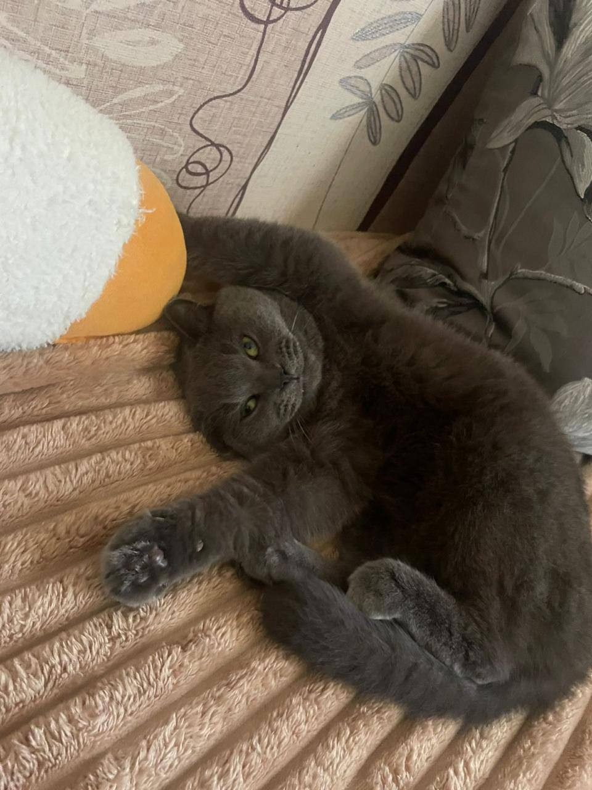

Головна

Мого домашнього олюблинця звати Барік, таку породу дуже рідко можна побачить бо ця порода не дуже папулярна як всі. Про нього нижче ⊽.
Опис породи мого домашнього олюбленця
Походження та історія
«Британські висловухі» коти — це результат схрещування британської короткошерстої та шотландської висловухої (скоттіш-фолд) порід, що виник у 1990-х роках. Офіційно породи «британська висловуха» не існує, це шотландці (фолди), які отримали від британців кремезність і плюшеву шерсть. Історія висловухості почалася з природної мутації 1961 року в Шотландії.
Зовнішній вигляд
Британська висловуха кішка — це поширена назва для шотландської висловухої (скоттіш-фолд), яка характеризується «плюшевою» зовнішністю, круглою головою, виразними великими очима та унікальними загнутими вперед і вниз вухами
Місця проживання
Британські короткошерсті та шотландські висловухі (скоттіш-фолд) коти — це виключно домашні породи, які комфортно почуваються в квартирах або приватних будинках. Вони потребують тепла, затишку та охайності, погано переносять холод і вологість. Вони не потребують великого простору для бігання, але люблять власні місця для відпочинку.
Характер та поведінка
Британські висловухі коти (часто — це результат схрещування британської короткошерстої та шотландської висловухої) поєднують спокій, інтелект та аристократичну стриманість. Вони самодостатні, легко переносять самотність, не нав’язливі, але віддані родині, вирізняючись терплячістю та м'яким характером.
Чим харчується
- Яловичина (сира або відварна): Найкраще джерело білка, яке потрібно переморозити перед подачею.
- Індичка або курка: Дієтичне м'ясо, яке легко засвоюється.
- Курячі чи індичі серця: Багаті на таурин, дуже корисні для серцево-судинної системи.
- Кисломолочні продукти: Кефір, кисле молоко або нежирний сир (2-5%) без добавок.
- Перепелині яйця: Джерело вітамінів, можна давати сирими або вареними (1-2 рази на тиждень).
- Відварна морська риба: Тріска або тунець (без кісток), зрідка, як доповнення до раціону.
цікаві факти про породу котів британців веслоухих
- «Плюшева» шерсть: Мають унікальний підшерсток, який робить їх на дотик схожими на м'яку іграшку, а шерсть здається трохи «твердою».
- Справжні інтроверти: Британець — це кіт, який гуляє сам по собі. Вони не люблять, коли їх постійно тискають, і віддають перевагу компанії, а не «рукам».
- Вуха-фолди: Висловухість (fold) — це не порода, а генетична особливість шотландців, яку іноді помилково приписують британцям.
- Справжні британці — прямовухі (страйти).
- «Чеширська» посмішка: Завдяки масивним щокам і круглій мордочці, британці виглядають так, ніби постійно посміхаються. Не «хвостики»
- «хвостики»: На відміну від шотландців, британці рідко бігають за господарем, вони самодостатні та легко переносять самотність.
- Римське коріння: Предків сучасних британців завезли на острови римські легіонери, тому порода вважається однією з найдавніших.
- Вміють спати на спині: Через особливості будови та спокійний характер, вони часто сплять у кумедних позах, включаючи позу на спині.
- Прискіпливі до лотка: Британці дуже охайні та вибагливі до чистоти свого місця відпочинку та лотка.
Характеристики
| Характеристика | Значення |
|---|---|
| Висота | 20-40 (см) |
| Довжиина | 40-60 (см) |
| Швидкість бігу | 40-50 (км/год) |
| Тривалість життя | 10-15 (років) |
| Колір шерсті | Зазвичай сірий |